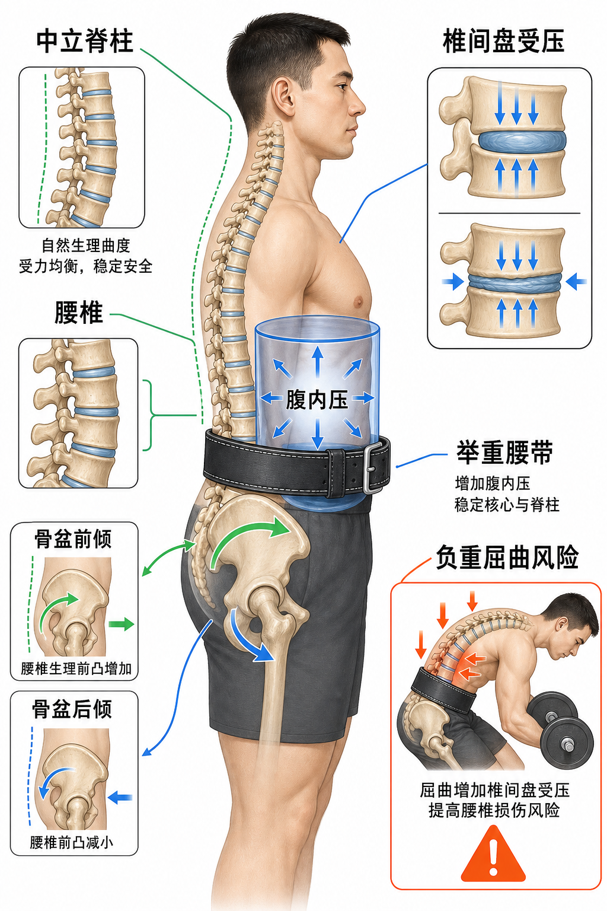

Day 18 · 脊柱与核心生物力学
一句话总结
脊柱像一根有天然弯曲的承重塔，核心像包在塔外的可调压力罐: 训练时不是把腰“锁死”，而是用腹内压、骨盆控制和中立脊柱把外力分散掉。负重屈曲会把压力集中到椎间盘和韧带，硬拉、深蹲、划船都要先会这个逻辑。

核心要点
-
中立脊柱: 不是把背挺成直线，而是保留颈胸腰的自然曲度，让椎间盘和小关节受力更均匀。
先抓结论: 中立位是一个安全区间，不是一条毫米级标准线。真实例子
字面意思
脊柱保持接近自然生理曲度，既不过度弓腰，也不过度圆背。
大白话
像把弓形桥放回设计角度，桥拱能分散压力，不让某一块砖硬吃全部重量。
为什么影响训练
大重量时，椎间盘、韧带、竖脊肌和深层核心一起承压，中立位能减少局部压力尖峰。
硬拉准备位如果腰椎已经明显屈曲，拉起瞬间外力会把屈曲趋势继续放大；如果过度反弓，腰椎小关节压力也会升高。目标是肋骨、骨盆和腰椎在可控区间内一起移动。
训练含义做深蹲、硬拉、划船、农夫走时，先问自己“肋骨有没有外翻、骨盆有没有乱跑、腰椎有没有被重量拉弯”。这比只喊“挺胸抬头”更准确。
常见误解❌以为中立脊柱等于腰背完全笔直。✅其实人体脊柱本来有曲度，完全抹平曲度也不是更安全。
-
腰椎骨盆节律: 躯干前屈、后伸时，腰椎和骨盆要协调配合，不能让腰椎单独替髋关节干活。
腰椎骨盆节律 = 腰椎弯曲和骨盆旋转的分工节奏。髋动不了，腰就容易被迫多动。
真实例子动作状态 正常分工 失控表现 髋铰链 骨盆向前倾，髋关节折叠，腰椎保持接近中立。 骨盆不动，腰椎圆背代偿。 深蹲下蹲 髋、膝、踝一起屈曲，骨盆随深度调整。 到底部骨盆突然后卷，出现 butt wink。 起身伸展 髋伸和躯干伸展同步完成。 先抬胸再挺腰，或腰先伸髋不动。 罗马尼亚硬拉不是“弯腰摸杠铃”，而是髋向后坐、骨盆随髋折叠，脊柱像一根稳定梁。动作深度应由腘绳肌张力、髋活动度和中立位控制共同决定。
训练含义如果客户硬拉总圆背，先不要直接加竖脊肌训练。先检查髋铰链会不会做、腘绳肌是否限制、杠铃是否离身体太远。
常见误解❌以为腰椎越灵活越好。✅腰椎需要一定活动度，但在负重训练中更重要的是可控和稳定，髋关节该承担大部分折叠任务。
-
椎间盘受压: 负重屈曲比中立负重更容易把压力集中到椎间盘前后结构，风险随重量和疲劳升高。
椎间盘像夹在椎体之间的软垫。它能承压，但怕在大重量下被反复压偏、剪切和扭转。真实例子
字面意思
椎体上下压向椎间盘，椎间盘内部压力上升。
大白话
像按一块果冻垫，正中压较均匀，弯着压更容易把压力挤向一侧。
考试重点
NSCA/NASM 常把负重屈曲、旋转和疲劳放在损伤风险情境中考。
硬拉最后几次如果髋伸不动、背开始圆，重量仍然往下拉，腰椎屈曲力矩变大。此时不是“意志力问题”，而是组织承压和控制能力已经接近上限。
训练含义训练中允许轻微姿势波动，但不应把明显圆背当成常规技术。尤其是新手、疲劳组、速度下降明显时，应降重或停止。
常见误解❌以为所有脊柱屈曲都危险。✅日常屈曲不是问题，问题是高负荷、高疲劳、反复屈曲或屈曲加旋转叠加。
-
腹内压: 腹腔内压力像躯干内部气柱，能和核心肌群一起抵抗脊柱被压弯或扭转。
腹内压不是“憋到脸红”，而是呼吸、膈肌、腹横肌、骨盆底和腹斜肌共同制造的稳定压力。
真实例子结构 像什么 训练作用 膈肌 压力罐上盖。 吸气下降，帮助腹腔建立压力。 骨盆底 压力罐底部。 承托压力，避免只向下顶。 腹横肌/腹斜肌 罐壁。 围住腹腔，抵抗伸展和旋转。 竖脊肌/多裂肌 后侧支架。 维持椎间稳定和抗屈曲。 深蹲前吸气到腹部和侧腰，再像准备被人轻推肚子一样撑住。你会感觉躯干变成一个整体，而不是只靠下背硬顶。
训练含义大重量用短暂屏气和支撑能提高稳定性；轻中等训练可以练习吸气、撑腹、维持肋骨不过度外翻。核心训练目标是把压力用在稳定上，而不是只做卷腹次数。
常见误解❌以为收腹越用力越稳定。✅很多时候要“向四周撑开”，不是把肚子吸瘪。吸瘪会减少可用压力罐空间。
-
举重腰带: 腰带不是替你发力，而是给腹部一个可撑的外壁，帮助腹内压更稳定。
腰带像给压力罐外面加一圈硬边。你仍然要主动撑腹，否则腰带只是装饰。真实例子
什么时候有用
接近大重量、低次数、深蹲硬拉等轴向或髋铰链负荷高的动作。
什么时候不必依赖
技术学习、轻重量、核心控制训练、需要自然呼吸节奏的耐力训练。
怎么用
腰带紧到能撑住但还能吸气，把腹部和侧腰向腰带四周撑开。
硬拉 5RM 时腰带可以提供触觉反馈，让你更容易维持腹压和中立位。空杆学髋铰链时过早戴腰带，可能掩盖动作控制问题。
训练含义腰带是增强稳定的工具，不是修复动作错误的工具。圆背、杠铃离身体远、髋膝节奏乱，戴腰带也不能自动解决。
常见误解❌以为腰带会让核心变弱。✅合理使用不会让核心偷懒，因为你必须主动撑腹才能让腰带工作；滥用才会让技术学习变差。
-
抗伸展/抗屈曲/抗旋转: 核心真正常见任务是抵抗外力改变脊柱位置，而不是反复把脊柱卷来卷去。
核心像车身稳定系统，任务不是一直制造动作，而是在外力来时保持车身不乱摆。
真实例子核心任务 外力想让你怎样 训练例子 抗伸展 腰被拉成反弓。 平板支撑、死虫、健腹轮退阶。 抗屈曲 背被重量压圆。 硬拉、农夫走、前蹲。 抗旋转 躯干被拉着转。 Pallof press、单侧农夫走。 抗侧屈 身体被单侧重量拉歪。 单手提壶铃走、侧桥。 Pallof press 中，绳索从侧面拉你旋转。动作价值不在于手推出多远，而在于肋骨、骨盆和脊柱能不能保持正对前方。
训练含义核心训练应覆盖“抗”的方向。只做卷腹容易忽略抗旋转、抗侧屈和抗屈曲能力，而这些能力更贴近负重训练和运动场景。
常见误解❌以为核心训练等于腹肌燃烧感。✅核心能力更像稳定输出质量，感觉酸不等于脊柱控制好。
-
动作策略: 保护脊柱不是怕负重，而是让负重路径、髋关节、腹压和中立位配合起来。
技术判断顺序: 负重是否贴近身体 → 髋是否主导折叠 → 腹压是否建立 → 脊柱是否保持可控区间。
训练含义场景 重点提示 为什么 硬拉 杠铃贴近小腿，髋向后，背保持长。 缩短外力线到腰椎的力臂，减少腰椎屈曲力矩。 深蹲 肋骨压住，骨盆别突然后卷。 避免底部腰椎从中立区间突然进入屈曲。 俯身划船 先建立髋铰链和躯干角度，再拉。 否则背部主项会变成腰椎耐力测试。 农夫走 像把头顶往上拉，肋骨骨盆叠住。 训练抗屈曲、抗侧屈和腹压维持。 新手先学无负重髋铰链和呼吸支撑，再上杠铃。进阶者也要用速度下降、姿势明显变形、腹压掉掉这些信号判断是否该停止本组。
常见误解❌以为“腰不能动”才安全。✅脊柱可以动，但在高负重训练中，腰椎不应成为主要发力和代偿来源。
常见误区
❌很多人以为中立脊柱就是背完全打直。✅其实中立是保留自然曲度的安全区间，不是把腰椎曲度抹掉。
❌很多人以为腰带能保护所有腰。✅其实腰带只能帮助建立腹压，不能修复圆背、杠铃离身太远和髋铰链不会做。
❌很多人以为核心越酸越强。✅核心在大多数训练里更重要的是抗伸展、抗屈曲、抗旋转和抗侧屈的稳定能力。
记忆口诀
脊柱保自然，骨盆配腰弯；腹压像气罐，腰带只是墙；负重要贴身，圆背别硬扛。
翻转卡复习
实操关联
- 增肌: 俯身划船、罗马尼亚硬拉要先稳定脊柱，否则目标肌还没练够，腰椎先疲劳。
- 减脂: 循环训练疲劳时最容易腹压掉、圆背和耸肩，动作质量比堆动作数量更重要。
- 爆发: 跳跃、抓举、高翻等动作需要躯干刚性传力，核心软掉会让力量漏在腰椎和骨盆控制上。
- 耐力: 长跑或骑行中的骨盆位置和躯干控制会影响腰背疲劳，核心不是只为大重量服务。
- 康复: 腰背不适人群先练呼吸支撑、死虫、鸟狗、髋铰链，再逐步回到负重动作。
- 考试: 看到“负重屈曲、腰带、腹内压、中立脊柱、Pallof press”，优先联想到脊柱稳定和核心抗外力。